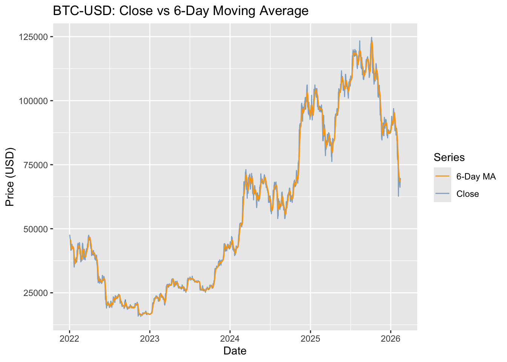
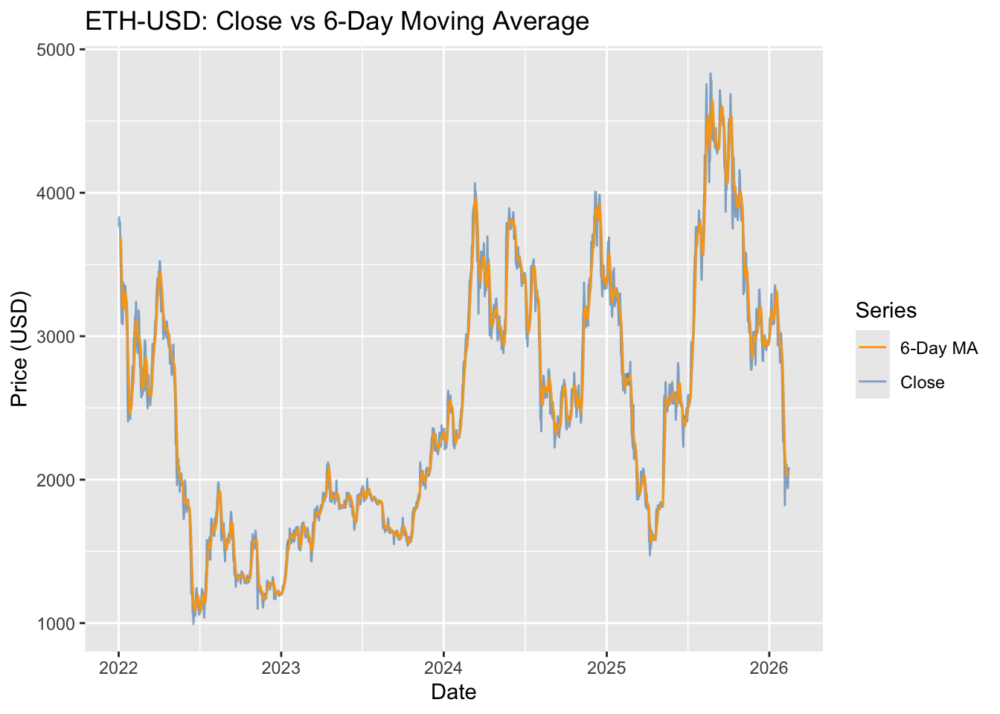

To practice Window Functions (in dplyr), I will use a cryptocurrency time-series dataset with daily end-of-day prices for at least two coins (e.g., BTC-USD and ETH-USD) starting from January 1, 2022. I will store the data in CSV files with columns such as date, symbol, and close_price, ensuring one row per (date, symbol). Then I will write queries using window functions partitioned by symbol and ordered by date to compute:
1. the year-to-date (YTD) average close price for each date (resetting at the start of each calendar year),
2. a 6-day moving average using a rolling window (the last 6 dates for each coin).
I will summarize the output in a small table or plot.
Download BTC + ETH data
I use tidyquant::tq_get() to fetch daily prices from Yahoo Finance for multiple symbols.
library(tidyquant)
Registered S3 method overwritten by 'quantmod':
method from
as.zoo.data.frame zoo
── Attaching core tidyquant packages ─────────────────────── tidyquant 1.0.11 ──
✔ PerformanceAnalytics 2.0.8 ✔ TTR 0.24.4
✔ quantmod 0.4.28 ✔ xts 0.14.1
── Conflicts ────────────────────────────────────────── tidyquant_conflicts() ──
✖ zoo::as.Date() masks base::as.Date()
✖ zoo::as.Date.numeric() masks base::as.Date.numeric()
✖ PerformanceAnalytics::legend() masks graphics::legend()
✖ quantmod::summary() masks base::summary()
ℹ Use the conflicted package (<http://conflicted.r-lib.org/>) to force all conflicts to become errors
library(dplyr)
######################### Warning from 'xts' package ##########################
# #
# The dplyr lag() function breaks how base R's lag() function is supposed to #
# work, which breaks lag(my_xts). Calls to lag(my_xts) that you type or #
# source() into this session won't work correctly. #
# #
# Use stats::lag() to make sure you're not using dplyr::lag(), or you can add #
# conflictRules('dplyr', exclude = 'lag') to your .Rprofile to stop #
# dplyr from breaking base R's lag() function. #
# #
# Code in packages is not affected. It's protected by R's namespace mechanism #
# Set `options(xts.warn_dplyr_breaks_lag = FALSE)` to suppress this warning. #
# #
###############################################################################
Attaching package: 'dplyr'
The following objects are masked from 'package:xts':
first, last
The following objects are masked from 'package:stats':
filter, lag
The following objects are masked from 'package:base':
intersect, setdiff, setequal, union
library(readr)library(lubridate)
Attaching package: 'lubridate'
The following objects are masked from 'package:base':
date, intersect, setdiff, union
library(slider)library(ggplot2)symbols <-c("BTC-USD", "ETH-USD")crypto <-tq_get( symbols,get ="stock.prices",from ="2022-01-01",to =Sys.Date())# Save the raw downloaddir.create("data", showWarnings =FALSE)write_csv(crypto, "data/crypto_btc_eth_daily.csv")crypto %>%glimpse()
A moving average should be smoother than the raw close price.
crypto_windows %>%filter(symbol =="BTC-USD") %>%ggplot(aes(x = date)) +geom_line(aes(y = close, color ="Close"), alpha =0.6) +geom_line(aes(y = ma_6_close, color ="6-Day MA")) +scale_color_manual(values =c("Close"="steelblue", "6-Day MA"="orange")) +labs(title ="BTC-USD: Close vs 6-Day Moving Average",x ="Date",y ="Price (USD)",color ="Series" )
Warning: Removed 1 row containing missing values or values outside the scale range
(`geom_line()`).
Warning: Removed 6 rows containing missing values or values outside the scale range
(`geom_line()`).

crypto_windows %>%filter(symbol =="ETH-USD") %>%ggplot(aes(x = date)) +geom_line(aes(y = close, color ="Close"), alpha =0.6) +geom_line(aes(y = ma_6_close, color ="6-Day MA")) +scale_color_manual(values =c("Close"="steelblue", "6-Day MA"="orange")) +labs(title ="ETH-USD: Close vs 6-Day Moving Average",x ="Date",y ="Price (USD)",color ="Series" )
Warning: Removed 1 row containing missing values or values outside the scale range
(`geom_line()`).
Warning: Removed 6 rows containing missing values or values outside the scale range
(`geom_line()`).

Conclusions
Using daily cryptocurrency prices for BTC-USD and ETH-USD since January 1, 2022, I applied window-style operations in dplyr to compute year-to-date average close prices and 6-day moving averages for each symbol. The YTD average provides a running baseline that resets each year, while the 6-day moving average smooths short-term noise and makes trends easier to interpret.
To extend this work, I could compare multiple window sizes (7/14/30 days), compute the same features on daily returns rather than raw prices, and add data-quality checks (duplicates, missing dates, extreme outliers) to ensure rolling calculations are based on a clean and consistent time series.